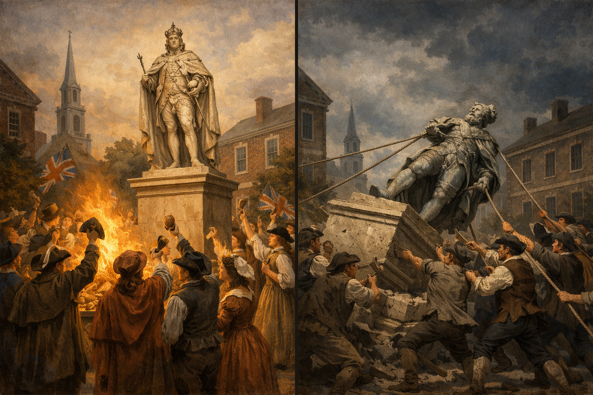
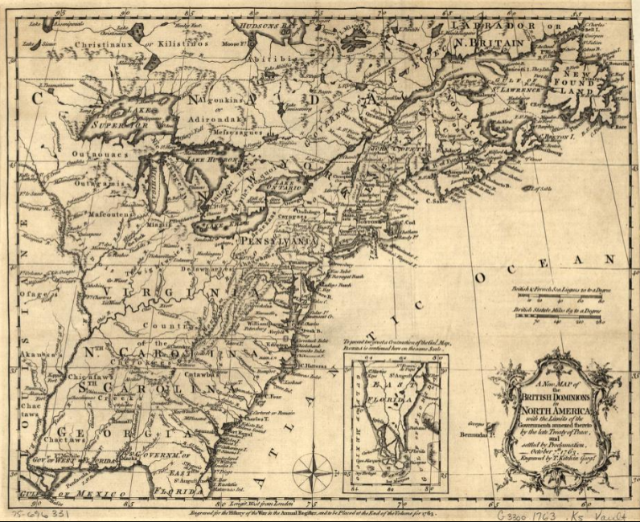
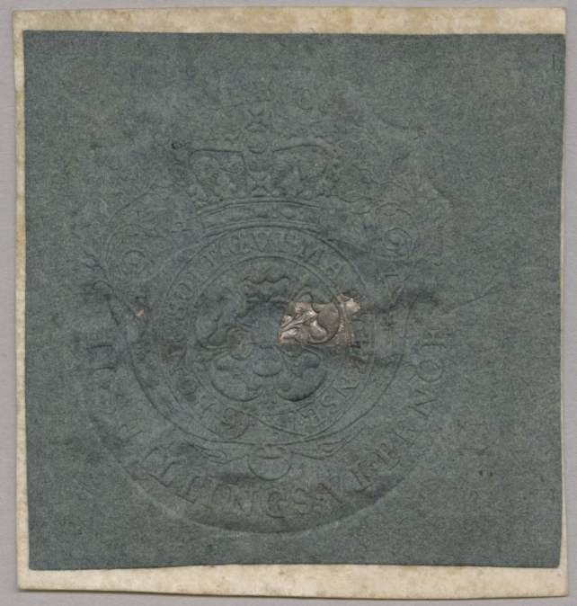
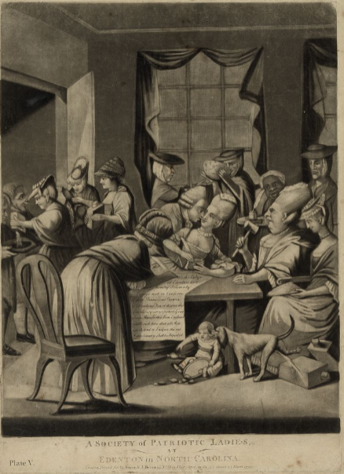
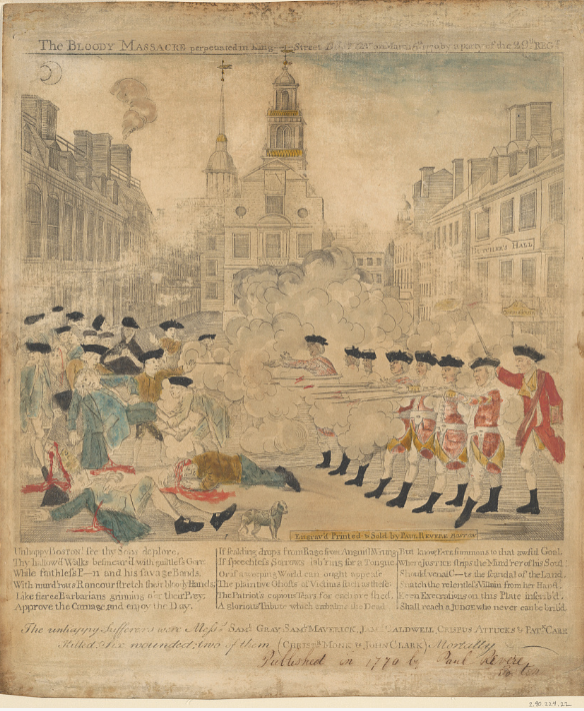
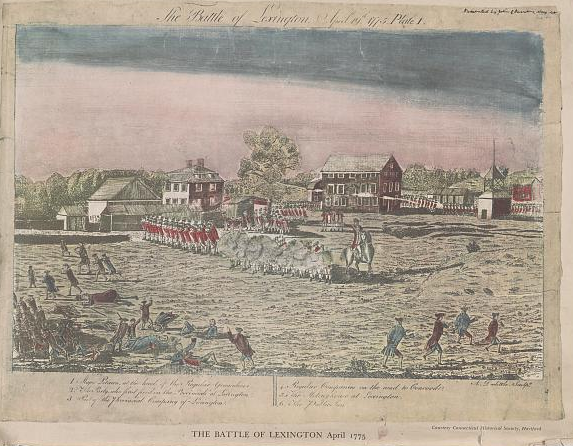
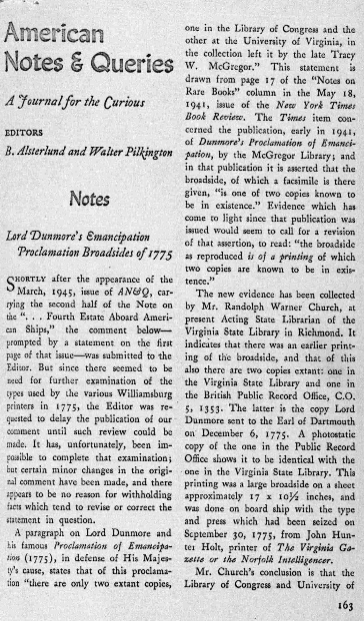
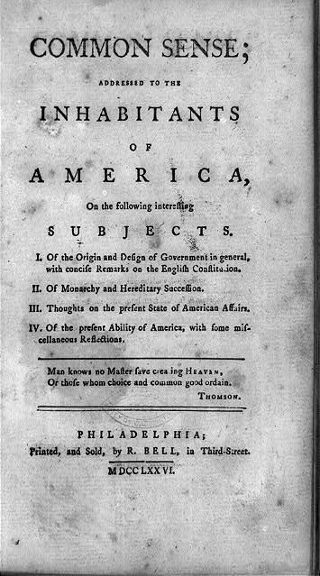
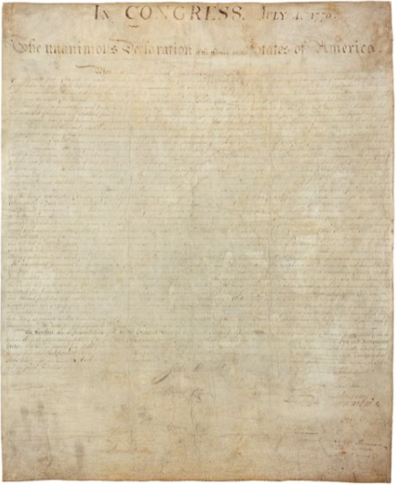
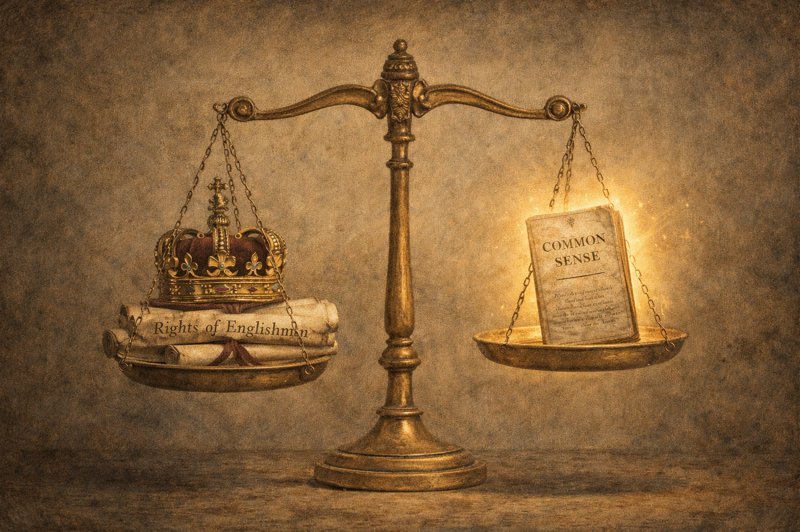

Core Objectives
- Analyze the ideological shift from resisting specific taxes to fearing a comprehensive British conspiracy against liberty.
- Evaluate the impact of the end of "Salutary Neglect" and the Proclamation of 1763 on colonial trust in Britain.
- Contrast the British concept of "virtual representation" with the colonial demand for "actual representation."
- Trace the escalation of conflict from the Stamp Act protests to the Coercive Acts.
- Explain how Thomas Paine’s Common Sense and the Declaration of Independence transformed the war into a struggle for universal human rights.
Key Terms
Salutary Neglect | French and Indian War | Proclamation of 1763 | Sugar Act | Stamp Act | Patrick Henry | Virtual Representation | Sons and Daughters of Liberty | Townshend Acts | Boston Massacre | Boston Tea Party | Intolerable Acts | Quebec Act | First Continental Congress | Lexington and Concord | Olive Branch Petition | Lord Dunmore’s Proclamation | Common Sense | Natural Rights | Social Contract
Introduction | From Patriots to Revolutionaries
Following the conclusion of the French and Indian War, American colonists were fiercely loyal subjects of the British Crown, celebrating their shared victory and the expanding empire. However, Great Britain's subsequent attempts to reorganize its territories and manage massive war debt quickly shattered this patriotic unity. Over the course of just thirteen years, the imperial relationship rapidly deteriorated from peaceful autonomy under the unofficial policy of "Salutary Neglect" to open, armed rebellion. This chapter explores the ideological and political breakdown of British authority, tracing how colonial grievances evolved from localized disputes over taxation to a radical, continental demand for universal human liberty and independence.

The aftermath of the French and Indian War initially brought a surge of patriotic loyalty to the British Crown, which rapidly dissolved into armed rebellion over the following thirteen years due to deep ideological and political fractures.
The Taxation Crisis
The British victory in 1763 marked the end of an era of colonial self-governance, replacing it with centralized control and taxation designed to pay down mounting imperial debts. As Parliament imposed unprecedented direct taxes and restricted westward expansion with the stroke of a royal pen, colonists felt their foundational rights as free Englishmen were under attack. This sudden shift sparked fierce constitutional debates over the nature of representation and whether the Crown had the authority to take a subject's property without their direct consent.
The End of Neglect and the Rise of Suspicion
In 1763, the American colonists were arguably the most patriotic subjects in the British Empire. They had just fought alongside British Redcoats to defeat the French in the French and Indian War (Seven Years’ War), securing the North American continent for the Crown. Bonfires were lit in Philadelphia and Boston to celebrate the victory; statues were erected to honor King George III. Yet, within thirteen years, these same colonists would be tearing down those statues and melting them into bullets to shoot at the King’s soldiers.
To understand this rapid descent from patriotism to revolution, one must look beyond the standard explanation of "taxation without representation." The break was not merely financial; it was constitutional and ideological. For generations, the colonies had operated under an unwritten policy known as Salutary Neglect. Because Britain was preoccupied with European wars and internal politics, it allowed the colonies to largely govern themselves. Colonial assemblies levied their own taxes, paid their own governors, and passed their own laws with minimal interference from London. This autonomy convinced Americans that they possessed the same rights and privileges as Englishmen living in Britain.
The victory in 1763 changed everything. The war had doubled Britain’s national debt and vastly expanded its empire. To manage this new territory and pay down the debt, the British government decided it needed to reorganize the empire. The era of Salutary Neglect was over; the era of centralized control had begun.

A 1763 British imperial map showing the settlement boundary along the Appalachian Mountains.
Why it Matters: The Proclamation of 1763 marked the end of the unwritten policy of "Salutary Neglect" by imposing centralized control over colonial movement. It alienated land speculators and veterans of the French and Indian War who felt betrayed by the Crown’s refusal to allow settlement on lands they had fought to secure.
The first shock came with the Proclamation of 1763. To prevent further costly wars with Native Americans, King George III drew a line down the Appalachian Mountains and forbade settlers from moving west. For colonists who had shed blood to conquer that land, this was a betrayal. It seemed as though the Crown was prioritizing the interests of Native Americans and fur traders over the land-hungry settlers. Wealthy speculators, including George Washington and Thomas Jefferson, saw their potential fortunes in western lands vanish with the stroke of a royal pen.
Checkpoint
1. How did the policy of Salutary Neglect influence the American colonies' perspective on their relationship with Britain?
Taxation and Representation
The political crisis began in earnest with the Sugar Act of 1764 and, more explosively, the Stamp Act of 1765. The Stamp Act was the first direct tax ever imposed on the colonies by Parliament. It required a government stamp on all paper goods—legal documents, newspapers, playing cards, and almanacs.
The reaction was furious and immediate. The issue was not that the tax was expensive; it was actually quite low. The issue was power. Colonial leaders argued that under the British constitution, a man’s property could not be taken from him without his consent. Since the colonists did not vote for members of Parliament, they argued, Parliament had no right to tax them. Their slogan, "No Taxation Without Representation," was a defense of their status as free Englishmen.

An embossed official stamp used to collect taxes on legal documents and newspapers under the 1765 Stamp Act.
Why it Matters: The Stamp Act was the first direct tax imposed on the internal commerce of the colonies, triggering a constitutional crisis over the nature of consent. It led to the rejection of "virtual representation" and established the principle that only locally elected representatives had the authority to tax the colonists.
Resistance was not limited to the streets of Boston. In Virginia, a young lawyer named Patrick Henry electrified the House of Burgesses with a series of resolutions against the Stamp Act. Henry argued that Virginians enjoyed all the privileges of Britons and could only be taxed by their own representatives. When he cried, "Caesar had his Brutus, Charles the First his Cromwell, and George the Third may profit by their example," he was accused of treason. His reply—"If this be treason, make the most of it"—signaled that the crisis was continental, not local.
British officials dismissed these arguments with the theory of Virtual Representation. They claimed that members of Parliament represented the interests of the entire empire, not just the district that elected them. Therefore, the colonists were represented, virtually, just like the citizens of Manchester or Birmingham who also could not vote. Americans rejected this logic. They believed in "actual representation"—that a representative must be chosen by the people he serves and be directly accountable to them.
Checkpoint
1. What was the primary constitutional objection colonists had to the Stamp Act?
Paranoia, Protest, and Violence
As the dispute over taxation deepened, colonial resistance transformed into organized action, fueled by a growing belief that British policies were part of a deliberate, aggressive conspiracy to destroy American liberty. This period saw the rise of militant coordination, widespread economic boycotts of British goods, and violent clashes in the streets as citizens politicized their daily households. Tensions between occupied cities and standing armies eventually culminated in deadly confrontations, most notably the highly publicized incident that patriot leaders branded the Boston Massacre. Subsequent British attempts to enforce control, such as manipulating the tea trade, were met with spectacular acts of defiance. In response to the Boston Tea Party, Parliament enacted sweeping, punitive measures designed to crush Massachusetts—actions that ultimately backfired by confirming colonial fears of tyranny and uniting the colonies in shared outrage.
From Conspiracy to Escalation
The escalating crisis revealed a terrifying possibility to the colonists: if Parliament could take one penny of their property without their consent, it could take everything. Influenced by radical British political writers known as the "Commonwealthmen" or "Real Whigs," Americans began to see these taxes not as mistakes, but as evidence of a deliberate conspiracy. These writers taught that power was aggressive and encroaching; it was a predator that naturally sought to destroy liberty. The symptoms of this corruption were clear to anyone who knew Roman history: a standing army in peacetime, the appointment of corrupt officials, and the bypass of local laws. Through this lens, the Stamp Act was not a tax; it was the first chain of slavery. This paranoid style of politics meant that every British action was interpreted as a sinister plot, making compromise nearly impossible.
With diplomatic solutions seemingly off the table, this deep-seated fear quickly translated into organized, physical defiance. Fueled by the belief that their liberties were under imminent threat, resistance to the Stamp Act mobilized the colonies as never before. A secretive group known as the Sons of Liberty formed in Boston and New York to coordinate opposition. They were not polite debaters; they were street fighters. They intimidated tax collectors, burned effigies, and organized boycotts of British goods. Crucially, women joined the resistance through the Daughters of Liberty. They organized "spinning bees" to produce homespun cloth, allowing the colonies to boycott British textiles. Wearing rough, American-made clothes became a badge of honor and a symbol of virtue, while wearing fine British silk became a sign of moral corruption. This politicized the household; the simple act of buying tea or cloth became a political statement. The economic pressure worked.

A 1775 satirical mezzotint depicting North Carolina women pledging to boycott British tea and textiles.
Why it Matters: The Daughters of Liberty transformed the domestic household into a site of political resistance through "spinning bees" and non-consumption agreements. By producing homespun cloth and refusing British goods, colonial women demonstrated that the resistance movement had moved beyond urban street protests into every household.
British merchants, losing money due to the boycotts, lobbied Parliament to repeal the Stamp Act in 1766. However, the repeal was a strategic retreat, not a surrender. Parliament immediately passed the Declaratory Act, asserting its absolute right to bind the colonies "in all cases whatsoever." The conflict had not been resolved; it had been postponed. In 1767, Parliament tried again with the Townshend Acts, placing duties on glass, lead, paint, paper, and tea. Again, the colonists boycotted; again, tensions rose. To enforce order, Britain dispatched 4,000 troops to occupy Boston, a city of only 16,000 people. The presence of a standing army in peacetime—a traditional sign of tyranny—inflamed the population.
Checkpoint
1. How did the Daughters of Liberty contribute to the resistance against British taxation?
The Boston Massacre
By early 1770, the presence of British troops in Boston had become increasingly volatile, exacerbated by fierce competition for jobs between local laborers and poorly paid, off-duty British soldiers seeking extra work. On the snowy night of March 5, 1770, the tension snapped. A crowd of Bostonians began taunting a squad of British sentries guarding the Customs House, throwing snowballs, ice, and rocks. Confused and panicked, the soldiers fired into the crowd, killing five civilians. Among the dead was Crispus Attucks, a sailor of African and Native American ancestry who is often cited as the first casualty of the Revolution.
The event could have been viewed as a tragic riot. Instead, Samuel Adams and other patriot leaders seized upon it as a masterpiece of propaganda, quickly labeling it the "Boston Massacre". Paul Revere produced a highly inaccurate but deeply effective engraving showing a line of redcoats firing a synchronized volley into a peaceful, unarmed crowd, with a bloodthirsty British officer waving his sword. Copies of the print circulated rapidly throughout the colonies, convincing many Americans that the British army was there not to protect them, but to butcher them.

Paul Revere’s sensationalized 1770 engraving of British troops firing on a crowd of Bostonians.
Why it Matters: Patriot leaders utilized this engraving as a propaganda tool to frame a chaotic riot as a premeditated slaughter of innocent civilians. The circulation of this image confirmed colonial fears that a standing army in peacetime was a deliberate tool of tyranny designed to suppress liberty.
Despite the fierce public outrage and the flurry of propaganda, the British soldiers were put on trial. In a surprising move, they were defended in court by John Adams, a devoted patriot and cousin of Samuel Adams. John Adams despised the presence of the British army but believed strongly in the rule of law, arguing that the soldiers had acted in self-defense against a dangerous, "motley rabble" and an unruly mob. He wanted to demonstrate to the world that Massachusetts was governed by justice, not mob violence. His defense was largely successful: seven of the soldiers were acquitted, while two were convicted of the lesser charge of manslaughter, branded on the thumb, and released.
Checkpoint
1. Why did Paul Revere’s engraving of the Boston Massacre serve as effective propaganda?
The Tea Party and the Intolerable Acts
By 1773, Parliament had repealed all the Townshend duties except one: the tax on tea. That year, Parliament passed the Tea Act to bail out the struggling East India Company, giving it a monopoly on the American tea trade. Even with the tax, this tea was cheaper than smuggled Dutch tea. Parliament assumed the colonists would buy the cheaper tea and implicitly accept the tax.
They miscalculated. The colonists saw the cheap tea as a trap—a bribe to trick them into surrendering their principles. On December 16, 1773, the Sons of Liberty, thinly disguised as Mohawk Indians, boarded three ships in Boston Harbor and smashed 342 chests of tea, dumping the contents into the water. This was the Boston Tea Party.

A lithograph depicting the Sons of Liberty dumping British East India Company tea into the water in 1773.
Why it Matters: The Boston Tea Party was a direct rejection of the Tea Act, which the colonists viewed as a bribe to trick them into accepting parliamentary taxation. This act of defiance triggered the "Intolerable Acts," which aimed to crush Massachusetts but instead united the colonies in a shared defense of their rights.
King George III was furious. "The die is now cast," he wrote. "The colonies must either submit or triumph." Parliament retaliated with the Coercive Acts of 1774, which Americans called the Intolerable Acts. These laws were designed to crush Boston and serve as a warning to the other colonies. The port of Boston was closed until the tea was paid for; the Massachusetts charter was revoked, placing the colony under military rule; and a new Quartering Act allowed soldiers to be housed in private buildings.
Compounding the fear was the Quebec Act, passed at the same time. This act expanded the borders of the Catholic province of Quebec into the Ohio Valley—land claimed by Virginia and Pennsylvania—and granted religious toleration to Catholics. To the Protestant colonists, who grew up on stories of Catholic tyranny, this looked like a deliberate attempt by Parliament to surround the free Protestant colonies with a "Popish" threat.
The Intolerable Acts backfired. Instead of isolating Massachusetts, they united the colonies. If Britain could revoke the charter of Massachusetts, no colony was safe. In September 1774, delegates from twelve colonies met in Philadelphia for the First Continental Congress. They endorsed the "Suffolk Resolves," which declared the Intolerable Acts unconstitutional and called for a general boycott of British trade and the formation of militias for defense. The logic of revolution was moving from argument to armed resistance.
Checkpoint
1. How did the colonists interpret the Tea Act of 1773?
The Road to Revolution
Even after the first shots were fired, many colonists remained hesitant to declare full independence, initially fighting merely to force a redress of their grievances while claiming loyalty to the King. However, radical new publications, changing social dynamics driven by the threat of slave insurrections in the South, and the King's absolute refusal to compromise pushed the Continental Congress to an inevitable conclusion. The colonies formally severed ties with Great Britain, articulating a revolutionary vision of government based not on British tradition, but on universal, God-given rights.
The Shift to Independence
In April 1775, the "cold war" turned hot. British troops marched from Boston to Concord to seize a cache of colonial gunpowder. They were met by local militiamen (Minutemen) at Lexington Green. A shot rang out—no one knows who fired it—and the "Shot Heard 'Round the World" began the War of Independence at Lexington and Concord.
Yet, strangely, even after blood was spilled at Lexington, Concord, and Bunker Hill, most colonists were not fighting for independence. They were fighting for a "redress of grievances." They claimed to be loyal subjects of the King, fighting against his corrupt ministers and Parliament. They toasted the King’s health at dinner and then went out to shoot at his soldiers.

A contemporary engraving of the first armed confrontation between British Regulars and colonial Minutemen.
Why it Matters: The skirmish at Lexington and Concord marked the transition from constitutional debate to open military conflict. Even after this "Shot Heard 'Round the World," the Continental Congress attempted to maintain loyalty through the Olive Branch Petition before being forced toward full independence.
This hesitation was formalized in the Olive Branch Petition (July 1775), sent by the Continental Congress to King George III. It affirmed American loyalty and begged the King to intervene to stop the bloodshed. The King refused to even read it. Instead, he declared the colonies to be in a state of "open and avowed rebellion."
Checkpoint
1. How did King George III respond to the Olive Branch Petition?
The Southern Turning Point: Lord Dunmore's Proclamation
While Boston radicals pushed aggressively for war, many wealthy Southern planters remained deeply hesitant to break fully with Great Britain. That delicate balance changed in November 1775, when Lord Dunmore (John Murray), the royal governor of Virginia, issued a controversial proclamation. Seeking to quickly suppress the growing rebellion, Dunmore offered freedom to any enslaved person who escaped their rebel masters and took up arms for the British King.
Dunmore acted quickly on this promise, organizing hundreds of escaped slaves into a loyalist force that became known as the "Ethiopian Regiment". In a stark visual challenge to the Southern social hierarchy, members of this regiment were reportedly outfitted with uniforms bearing the provocative motto "Liberty to Slaves".

The 1775 official broadside offering freedom to enslaved people who escaped rebel masters to serve the King.
Why it Matters: Lord Dunmore’s Proclamation radicalized Southern planters by threatening the foundation of the Southern economy and social order. It pushed hesitant Southerners into the revolutionary camp by confirming their fears that the British military would sponsor slave insurrections to maintain imperial control.
Lord Dunmore's Proclamation absolutely terrified the South. It confirmed the planters' absolute worst nightmare: that the British would actively sponsor a slave insurrection to crush them. The decree outraged prominent Virginia slaveholders, including George Washington, as it signaled that the British military was willing to completely upend the Southern economy and social order to win the war.
Suddenly, the abstract, Northern fight for constitutional "liberty" became intertwined with a deeply pragmatic Southern fight to preserve the institution of slavery against British interference. In a profound historical irony, the British attempt to use emancipation as a localized weapon of war ultimately backfired, galvanizing the Southern aristocracy and uniting them firmly with the radical North in the final push for absolute independence.
Checkpoint
1. What did Lord Dunmore’s Proclamation offer to enslaved people in Virginia?
Common Sense
The man who shattered the remaining psychological attachment to Britain was a recent immigrant named Thomas Paine. In January 1776, he published a pamphlet titled Common Sense. Unlike the learned essays of John Adams or Thomas Jefferson, which quoted Latin legal texts, Paine wrote in the language of the common people.
Paine attacked the root of the problem: the King himself. He argued that it was absurd for an island to rule a continent. He described King George not as a father figure, but as a "Royal Brute." Most importantly, he argued that the colonists’ goal should not be reconciliation, but independence. He shifted the argument from the "rights of Englishmen" (which were based on history and tradition) to Natural Rights (which were God-given and universal).

The frontispiece of Thomas Paine’s 1776 pamphlet that called for a total break with the British monarchy.
Why it Matters: Paine’s pamphlet used plain, direct language to dismantle the psychological and traditional ties the colonists felt toward King George III. By articulating a vision of America as an "asylum for mankind" based on republican principles, he shifted the public conversation from reconciliation to independence.
Common Sense was a sensation, selling over 100,000 copies in a few months. It was read in taverns, workshops, and army camps. Paine provided the intellectual permission for Americans to break with the monarchy. He articulated a vision of America not as a British outpost, but as an "asylum for mankind," a new type of nation based on republican principles.
Checkpoint
1. What ideological shift did Thomas Paine advocate in his pamphlet?
The Declaration of Independence
By the summer of 1776, the Continental Congress in Philadelphia could no longer ignore the reality of war. On July 2, 1776, the Congress voted for independence. Two days later, on July 4, they approved the document explaining why.
The Declaration of Independence, drafted primarily by Thomas Jefferson, is not just a breakup letter to Great Britain; it is a statement of political philosophy. The preamble distills the Enlightenment thinking of John Locke into a revolutionary formula:
- Natural Rights: "All men are created equal" and possess "unalienable Rights, that among these are Life, Liberty and the pursuit of Happiness."
- Social Contract: Governments are created to protect these rights and derive their power from the "consent of the governed."
- Right of Revolution: If a government fails to protect these rights, "it is the Right of the People to alter or to abolish it."

The official parchment document drafted by Thomas Jefferson and approved on July 4, 1776.
Why it Matters: The Declaration finalized the intellectual break with Britain by appealing to universal "Natural Rights" rather than just the "rights of Englishmen". It established the radical principles of equality and the "consent of the governed" as the only legitimate foundations for government.
The bulk of the document is a list of grievances against King George III—accusing him of dissolving legislatures, obstructing justice, keeping standing armies, and cutting off trade. By focusing on the King, Jefferson confirmed what Paine had argued: the monarch was the villain.
The Declaration marked the final transformation of the colonial mind. The colonists were no longer arguing about the Magna Carta or the British Constitution. They were appealing to the "laws of nature and of nature's God." This shift had profound consequences. By declaring that "all men are created equal," the Founders established a standard by which they—and all future generations—would be judged.
The irony, of course, was that the man who wrote those words enslaved over 600 people during his lifetime. The Declaration ignored women, Native Americans, and enslaved Africans, many of whom were fighting on both sides of the war. This "American Paradox"—the simultaneous rise of liberty and slavery—was the flaw in the foundation. The logic of revolution was universal, but its application was limited. It would take centuries of struggle to force the nation to live up to the promise made in 1776.
Checkpoint
1. According to the Declaration of Independence, what is the primary purpose of government?
TURNING POINTS | Common Sense
The Pamphlet That Changed the World
By January 1776, the American colonies were in a bizarre state of limbo. Blood had already been spilled at Lexington, Concord, and Bunker Hill. The Continental Army was besieging British-held Boston. Yet, astonishingly, most colonists—and even many delegates in the Continental Congress—were still toasting King George III at dinner. They believed they were fighting a ministerial conspiracy, not the Crown itself, and hoped for reconciliation.
The Moment
The rebellion lacked a clear end goal. The "rights of Englishmen" argument was running out of steam, but the idea of independence was terrifying. It meant treason, loss of British protection, and economic uncertainty. The movement needed an intellectual push to bridge the gap between resisting taxes and declaring a new nation.
The Decision
On January 10, 1776, an unknown recent immigrant named Thomas Paine published a forty-seven-page pamphlet titled Common Sense. Paine did not use the flowery Latin or legal jargon common in political writing. Instead, he wrote in the "language of the streets," using biblical imagery and rough metaphors that farmers and shopkeepers could understand.
- He attacked the "Royal Brute of Britain," destroying the psychological loyalty to the monarchy.
- He argued geography: "There is something very absurd in supposing a continent to be perpetually governed by an island."
- He argued economics: America would flourish more if it could trade freely with the whole world, not just Britain.
The Change
The impact was electric. Common Sense sold over 150,000 copies in a few months (equivalent to millions today). It was read in taverns, workshops, and army camps. It shattered the psychological barrier to independence. General Washington noted that the pamphlet was "working a powerful change... in the minds of many men." It shifted the conversation from "redress of grievances" to "independence" almost overnight.
Why It Matters
Without Common Sense, the Declaration of Independence might never have been written—or at least, not in 1776. Paine transformed a conservative tax revolt into a radical crusade for human liberty. He taught Americans that their cause was not just local, but universal: "The cause of America is in a great measure the cause of all mankind."

Accessible, radical literature can serve as a definitive tipping point in historical conflicts, bridging the gap between conservative resistance to taxation and the profound conceptual leap required to forge a entirely new nation.
Analytical Questions
Vocabulary Activity
Read the passage below and fill in the missing terms using the word bank provided. Each term is used exactly once.
Before 1763, the American colonies enjoyed a long period of , where Britain largely ignored their internal affairs and allowed colonial assemblies to govern themselves. However, massive imperial debts led Parliament to pass the in 1765, which placed an unprecedented direct tax on all paper goods. Colonists fiercely rejected the British constitutional argument of , insisting instead that only actual elected leaders had the authority to levy taxes. Tensions escalated, and after the Boston Tea Party, Parliament punished Massachusetts with sweeping, punitive measures known as the . Finally, in early 1776, Thomas Paine published his revolutionary pamphlet , shattering the colonists' lingering loyalty to the King and shifting the conversation toward full independence.